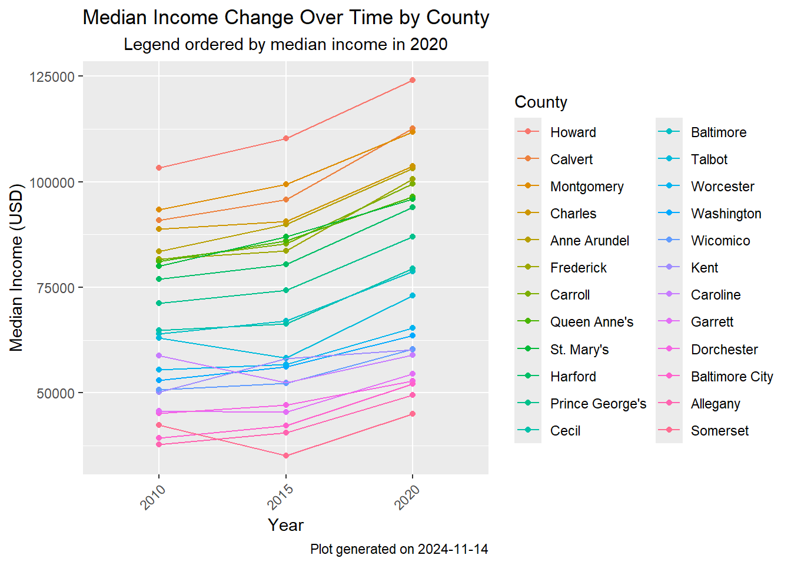
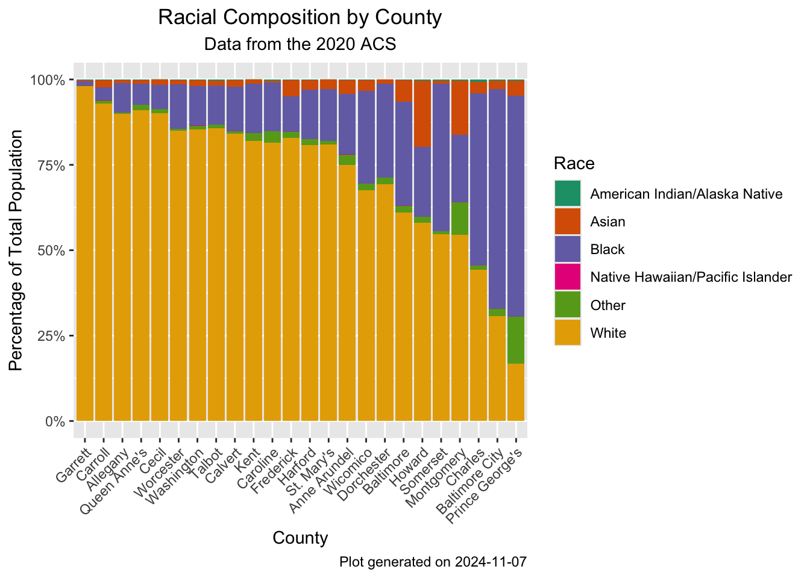
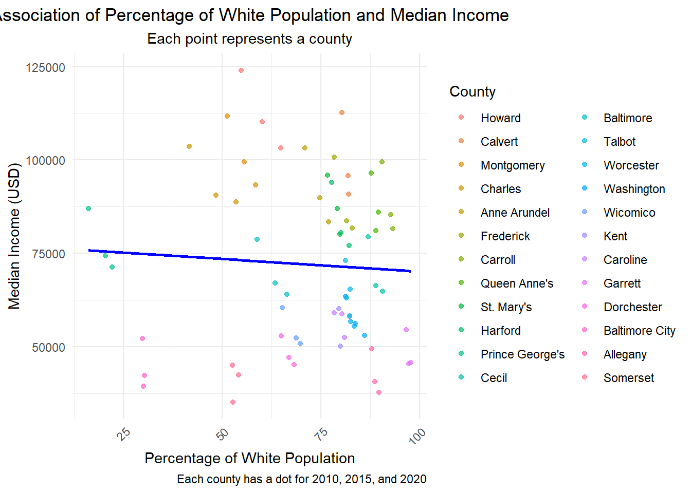
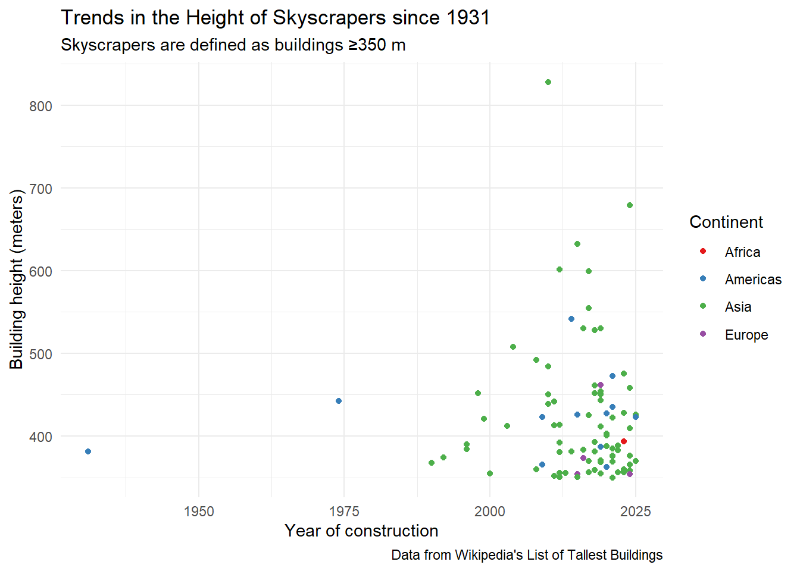
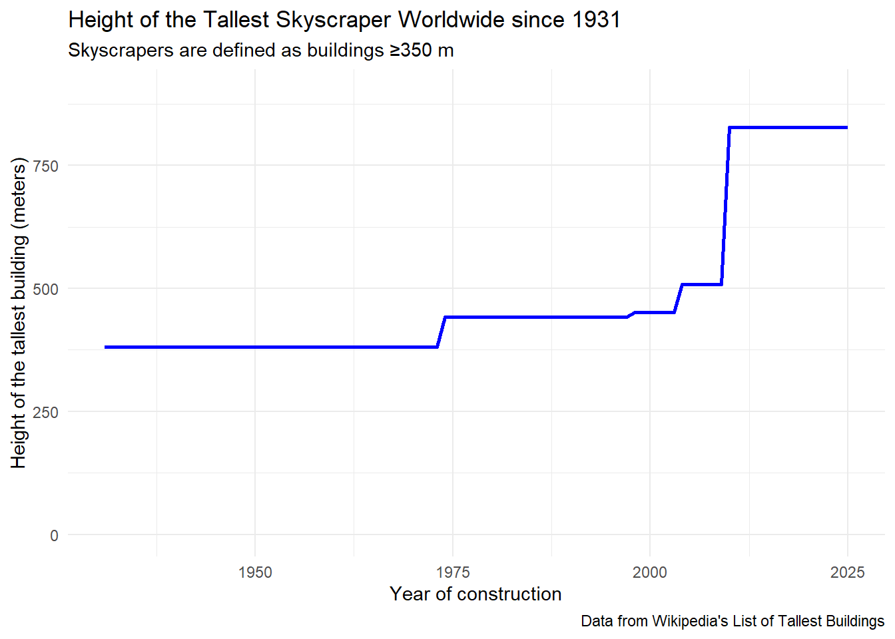

To install your API key for use in future sessions, run this function with `install = TRUE`.
#Study question: #First, we will create a function to make it easier to extract the population data we're interested inGET_CENSUS_ACS <-function(state, year) {if (!is.numeric(year)) {stop("The 'year' argument must be numeric") }if (!(state %in% state.abb)) {stop("The 'state' argument must be a valid two-letter state code.") } data <-get_acs(geography ="county",variables =c(medincome ="B19013_001", total_pop ="B01003_001", white ="B02001_002", black ="B02001_003", aian ="B02001_004",asian ="B02001_005", nhpi ="B02001_006", other ="B02001_007" ), state = state, year = year )return(data)}
Let’s use our first function from purr
We will use map to pull Maryland data for the years 2010, 2015, and 2020
#Now using our function, let's pull the data using one of the MAP functionsyears <-c(2010, 2015, 2020)MD_LIST <-map(years, ~GET_CENSUS_ACS("MD", .x))
Getting data from the 2006-2010 5-year ACS
Warning: • You have not set a Census API key. Users without a key are limited to 500
queries per day and may experience performance limitations.
ℹ For best results, get a Census API key at
http://api.census.gov/data/key_signup.html and then supply the key to the
`census_api_key()` function to use it throughout your tidycensus session.
This warning is displayed once per session.
How have median income and race fluctuated in Maryland’s counties, and are they related to each other?
# Now, let's clean the data# Using our second purrr function, let's add the year to each of the items in the listMD_LIST <-imap(MD_LIST, ~mutate(.x, year =as.integer(gsub("md_", "", .y))))#Next, we will turn them into data frames, append them, and clean the county names, so that they are easier to see in a plotmd_2010 <- MD_LIST[["md_2010"]]md_2015 <- MD_LIST[["md_2015"]]md_2020 <- MD_LIST[["md_2020"]]MD_COMBINED <-rbind(md_2010, md_2015, md_2020)#Now, with tidyverse functions, clean the county namesMD_COMBINED <- MD_COMBINED %>%mutate(NAME =str_replace(NAME, " County, Maryland", "")) %>%mutate(NAME =str_replace(NAME, " city, Maryland", " City")) #For our first plot, let's explore how much median income has changed for each county in each of the years####### This is just to reorder the counties in a way that makes sensecounty_order <- MD_COMBINED %>%filter(variable =="medincome", year ==2020) %>%group_by(NAME) %>%summarize(mean_income_2015 =mean(estimate, na.rm =TRUE)) %>%arrange(desc(mean_income_2015)) %>%pull(NAME)# Reorder NAME based on mean income in 2020 for the plot)MD_COMBINED <- MD_COMBINED %>%mutate(NAME =factor(NAME, levels = county_order))MD_COMBINED %>%filter(variable=="medincome")%>%ggplot(aes(x =factor(year), y = estimate, color = NAME, group = NAME)) +geom_point() +geom_path()+labs(title ="Median Income Change Over Time by County",subtitle ="Legend ordered by median income in 2020",caption =paste0("Plot generated on ",today()),x ="Year",y ="Median Income (USD)",color ="County" ) +theme(plot.title =element_text(hjust =0.5),plot.subtitle =element_text(hjust =0.5),axis.text.x =element_text(angle =45, hjust =1) )

Now, let’s explore if race distribution is associated to median income
#First, let's explore the race distribution by countyMD_RACE_PERCENT <- MD_COMBINED %>%filter(variable %in%c("total_pop", "white", "black", "aian", "asian", "nhpi", "other")) %>%group_by(GEOID, NAME, year) %>%mutate(percentage =ifelse(variable =="total_pop", NA, (estimate / estimate[variable =="total_pop"]) *100) ) %>%filter(variable !="total_pop") %>%ungroup() %>%mutate(race =fct_recode(variable,"White"="white","Black"="black","American Indian/Alaska Native"="aian","Asian"="asian","Native Hawaiian/Pacific Islander"="nhpi","Other"="other"))#Reorder the variable by peecentage whitecounty_order <- MD_RACE_PERCENT %>%filter(variable =="white", year ==2020) %>%arrange(desc(percentage)) %>%pull(NAME)# Reorder NAME based on mean income in 2020 for the plot)MD_RACE_PERCENT <- MD_RACE_PERCENT %>%mutate(NAME =factor(NAME, levels = county_order))MD_RACE_PERCENT %>%filter(year==2020)%>%ggplot(aes(x = NAME, y = percentage, fill = race)) +geom_bar(stat ="identity", position ="fill") +labs(title ="Racial Composition by County",subtitle ="Data from the 2020 ACS",x ="County",y ="Percentage of Total Population",fill ="Race",caption =paste0("Plot generated on ", today()) ) +scale_fill_brewer(palette="Dark2")+scale_y_continuous(labels = scales::percent_format()) +theme(plot.title =element_text(hjust =0.5),plot.subtitle =element_text(hjust =0.5),axis.text.x =element_text(angle =45, hjust =1))

# finally, let's explore if racial composition is associated to median incomeMD_PERCENT <- MD_COMBINED %>%filter(variable %in%c("total_pop", "white", "black", "aian", "asian", "nhpi", "other", "medincome")) %>%select(GEOID, NAME, year, variable, estimate) %>%pivot_wider(names_from = variable, values_from = estimate) %>%filter(!is.na(total_pop), !is.na(medincome)) %>%mutate(perc_white = (white / total_pop) *100,perc_black = (black / total_pop) *100,perc_aian = (aian / total_pop) *100,perc_asian = (asian / total_pop) *100,perc_nhpi = (nhpi / total_pop) *100,perc_other = (other / total_pop) *100 ) ggplot(MD_PERCENT, aes(x = perc_white, y = medincome)) +geom_point(aes(color = NAME), alpha =0.7) +geom_smooth(method ="lm", se =FALSE, color ="blue") +# Add a linear trend linelabs(title ="Association of Percentage of White Population and Median Income",subtitle ="Each point represents a county",x ="Percentage of White Population",y ="Median Income (USD)",color ="County",caption ="Each county has a dot for 2010, 2015, and 2020" ) +theme_minimal() +theme(plot.title =element_text(hjust =0.5),plot.subtitle =element_text(hjust =0.5),axis.text.x =element_text(angle =45, hjust =1))
`geom_smooth()` using formula = 'y ~ x'

Findings from Part 1:
Through this analysis, we have explored the association between median income and race in Maryland counties. First, we have used our API keys to download ACS data for the state of Maryland for the years 2010, 2015, and 2020. We used purrr functions to download and clean the data. Our first analysis involved plotting the changes to median income by county. In here, we found that every county has had an increase in median income from 2010 to 2020, although a couple of them dipped in 2015. Next, we investigated racial composition by county, and found that percentage of population that is White ranges from 12% in Prince George’s County, to almost 100% in Garrett country. Next, we explored if percentage of White population is associated to median income using a scatter plot with a fit regression. We found that although there is significant variability in median income by county, percentage of population that is White does not seem to significantly be associated to median income.
Part 2
For this part, we will examine the world’s tallest buildings
#Read in the wikipedia page on tallest skyscrapersskyscrapers <-read_html("https://en.wikipedia.org/wiki/List_of_tallest_buildings")#Obtain the tableskyscrapers_table <-html_table(skyscrapers, header=TRUE, fill =TRUE)[[2]]#Do some data cleaning#There are two columns witht the same name, so first rename onenames(skyscrapers_table)[which(names(skyscrapers_table) =="Height[14]")[1]] <-"height_meters"skyscrapers_table <- skyscrapers_table %>%select(2:length(skyscrapers_table)) %>%#This gets rid of that empty column at the beginningrename(height_feet =`Height[14]`) %>%filter(Name !="Name") %>%#This is the empty row at the topselect(-Image, -Comments) %>%mutate(Floors =str_remove(Floors, "\\(.*")) %>%mutate(Country =fct_collapse(Country,"United Arab Emirates"=c("UAE", "United Arab Emirates"))) #These are the same country#Add the continent from gapmindercontinents <- gapminder %>%select(country, continent) %>%group_by(country) %>%slice_head() %>%ungroup() %>%mutate(country=fct_recode(country,"South Korea"="Korea, Dem. Rep."))skyscrapers_table <-left_join(skyscrapers_table, continents, by=c("Country"="country"))#Manually add some that didn't matchskyscrapers_table$continent[skyscrapers_table$Country=="Russia"] <-"Europe"#Most skyscrapers are in Moscow or St. Petersburg, so let's assign Europeskyscrapers_table$continent[skyscrapers_table$Country=="United Arab Emirates"] <-"Asia"#Now let's see, by country, who was the most skyscrapersskyscrapers_table %>%ggplot(aes(x=fct_infreq(Country), fill=continent)) +geom_bar() +labs (x="Country", y="Skyscraper count", title ="Number of mega-tall skyscrapers by country", subtitle ="Mega-talls are buildings ≥350 m", caption ="Defined as architectural height") +coord_flip() +theme(plot.title =element_text(hjust =0.5),plot.subtitle =element_text(hjust =0.5))
#start by making height and year numericskyscrapers_table <- skyscrapers_table %>%mutate(height_meters =as.numeric(height_meters),year =as.numeric(Year)) %>%select(-Year)#first let's explore trends in heights by colorggplot(skyscrapers_table, aes(x = year, y = height_meters, color = continent)) +geom_point() +labs(x ="Year of construction", y ="Building height (meters)",title ="Trends in the Height of Skyscrapers since 1931",subtitle ="Skyscrapers are defined as buildings ≥350 m",caption ="Data from Wikipedia's List of Tallest Buildings") +scale_color_brewer(palette="Set1", name ="Continent")+theme_minimal()
Warning: Removed 1 row containing missing values or values outside the scale range
(`geom_point()`).

#creating data frame where height is only incremental throughout the yearsmaxheight <- skyscrapers_table %>%filter(!is.na(year) & year !="") %>%group_by(year) %>%summarise(max_height =max(height_meters)) %>%arrange(year) %>%mutate(max_height =cummax(max_height)) %>%filter(max_height ==cummax(max_height)) %>%select(year, max_height)#add all years between 1931 to 2025 for an accurate plot of the highest building at a timeall_years <-data.frame(year =1931:2025)maxheight_full <- all_years %>%left_join(maxheight, by ="year") %>%fill(max_height, .direction ="down") ggplot(maxheight_full, aes(x = year, y = max_height)) +geom_line(color ="blue", size =1) +labs(x ="Year of construction", y ="Height of the tallest building (meters)",title ="Height of the Tallest Skyscraper Worldwide since 1931",subtitle ="Skyscrapers are defined as buildings ≥350 m",caption ="Data from Wikipedia's List of Tallest Buildings") +theme_minimal()+ylim(0, 900)
Warning: Using `size` aesthetic for lines was deprecated in ggplot2 3.4.0.
ℹ Please use `linewidth` instead.

After extracting data on super-tall skyscrapers from Wikipedia, we have found that most buildings over 350 meters in height are in Asia. Not only that, but over 50% of of them are in China. The only country in the Americas with a super-tall skyscraper is the United States, although Mexico and Brazil have one under construction. In Africa, the only super-tall skyscrapers are in Egypt. Notably, construction of buildings over 350 meters has risen significantly since the 1990s. The record for the tallest skyscraper remained undefeated from 1931 to 1974, but after that, the record has been broken multiple times, increasing from 350 meters to 282 meters today. However, most skyscrapers built do not surpas the height of 500 meters. A limitation of this data is that Wikipedia is crowd-sourced, and is susceptible to changes by editors. Similarly, the information might be outdated, especially for articles with less traffic.